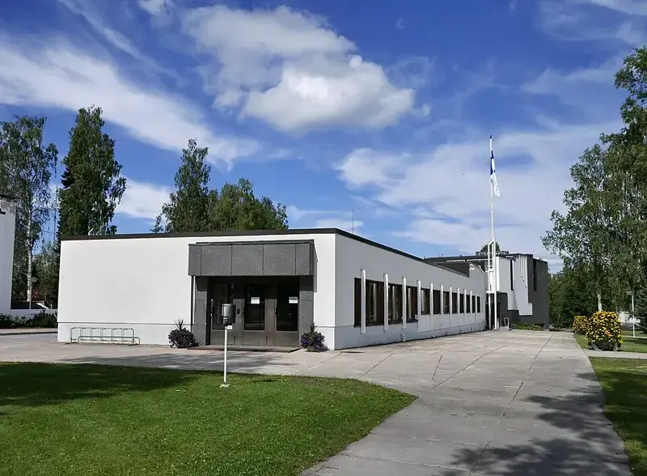
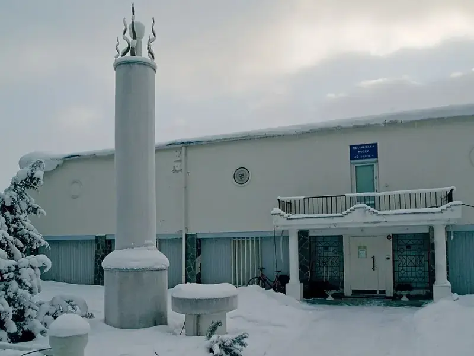
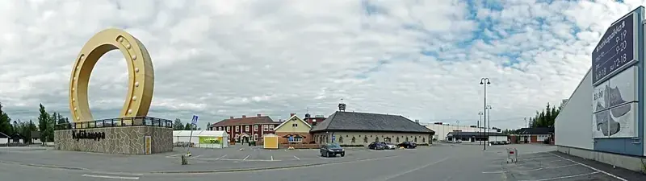

Etelä-Pohjanmaa
Etelä-Pohjanmaa tunnetaan lakeuksistaan, kylämaisemistaan ja tapahtumistaan. Löydä perheiden käyntikohteita, kulttuuria ja retkipaikkoja.
Luonto ja retkeily
🏛️Nähtävyydet ja kulttuuri
🚐Leirintäalueet ja matkaparkit
☕Kahvilat ja ravintolat
Etelä-Pohjanmaan kunnat
Etelä-Pohjanmaan parhaat käyntikohteet

Alajärven Aalto-keskus
Useita Alvar Aallon kohteita lähellä keskustaa.

Nelimarkka-museo
Eero Nelimarkan taidetta ja vaihtuvia näyttelyitä.
Alajärven kotiseutumuseo
Paikallista maaseutu- ja kulttuurihistoriaa.

Keskisen Kyläkauppa, Tuuri
Tunnettu ostos- ja matkailukohde koko perheelle.
Kuvien tekijät ja käyttöoikeudet
- Alajärven Aalto-keskus: Santeri Viinamäki · CC BY-SA 4.0 · Kuvan lähde. Kuvakoko pienennetty, rajaus kortin mukaan.
- Nelimarkka-museo: Kotivalo · CC BY-SA 3.0 · Kuvan lähde. Kuvakoko pienennetty, rajaus kortin mukaan.
- Keskisen Kyläkauppa, Tuuri: kallerna · CC BY-SA 3.0 · Kuvan lähde. Kuvakoko pienennetty, rajaus kortin mukaan.